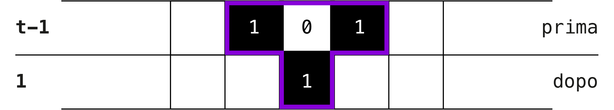
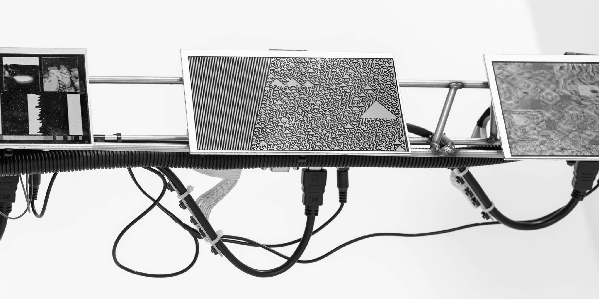

Gli automi cellulari rappresentano una forma di modellizzazione
computazionale che, nonostante la sua semplicità concettuale,
permette di studiare fenomeni complessi e di simulare una vasta gamma
di sistemi dinamici. La loro struttura di base comprende una griglia
di celle, ognuna delle quali può trovarsi in uno stato discreto, come
" acceso" o "spento", e l'evoluzione nel tempo di queste celle è regolata
da un insieme di semplici regole locali che determinano il cambiamento
di stato delle celle in base allo stato delle loro celle vicine.
Questo modello computazionale ha trovato applicazioni in numerosi
campi, dalla biologia alla fisica, dalla matematica alla computer science.
Ad esempio, in biologia, gli automi cellulari sono stati
utilizzati per simulare il comportamento di popolazioni cellulari,
modellare la diffusione di malattie o studiare l'evoluzione di
sistemi complessi come il sistema immunitario. In fisica, sono stati
utilizzati per studiare fenomeni di auto-organizzazione e emergenza
di pattern, mentre in matematica sono stati impiegati per investigare
la teoria del caos e la teoria dei sistemi dinamici.
Modelli di automa cellulare sui gusci di molluschi tropicali
Gli automi cellulari 1D sono tra gli automi cellulari più semplici.
Si riferiscono a una griglia organizzata linearmente, dove ogni cella
può essere viva (1) o morta (0). Questi automi, pur nella loro
semplicità, possono generare pattern complessi e imprevedibili nel tempo.
Ogni cella considera solo i suoi vicini immediati nel determinare il proprio
stato futuro, ma il risultato complessivo può dar luogo a una grande varietà
di comportamenti emergenti. Pensiamo al tempo che avanza di un passo alla volta.
Lo stato di ogni cella al tempo t si basa sullo stato della cella stessa
e delle celle alla sua sinistra e alla sua destra al tempo t-1.
Se visualizziamo un automa cellulare 1D come una griglia 2D in cui l'asse orizzontale
rappresenta il tempo e ogni riga rappresenta lo stato di ogni cella in quel momento,
possiamo vedere emergere alcuni modelli interessanti.
Qui sopra potete vedere un'automa cellulare 1D visualizzato nel tempo,
con le celle piene che rappresentano lo stato 1 e le celle vuote che rappresentano lo stato 0.
Pur partendo dallo stesso stato iniziale,
essi divergono rapidamente l'uno dall'altro, perché le regole di ogni automa sono diverse.
Abbiamo detto che lo stato di ogni cella al tempo t dipende dal suo stato e da quello
dei suoi vicini diretti al tempo t-1. Possiamo visualizzare questa relazione con un'immagine di stato.
Possiamo visualizzare questa relazione con una forma a "T", come questa:
La regola di un automa esprime in quale stato dovrebbe trovarsi la cella "dopo" (al tempo t) dati i 3 stati "prima" (a t-1), per tutte le possibili configurazioni di tali stati. Ad esempio, una regola potrebbe includere la sottoregola "se sono 0 e i miei vicini di sinistra e di destra sono 1, dovrei diventare 1".
Ogni sottoregola ha due parti: uno stato "prima" e uno stato "dopo". Cerchiamo di capire di quante sottoregole ha bisogno un automa cellulare 1D per coprire ogni possibile stato "prima". Ogni stato prima della sottoregola include lo stato di 3 celle, e ogni singola cella ha due possibili stati, 0 e 1. Soluzione: se lo stato precedente coinvolgesse una sola cella, ci sarebbero due possibili stati prima, 0 e 1.
L'aggiunta di una cella aggiunge due possibilità aggiuntive per ciascuna delle possibilità precedenti:

Con la stessa logica, l'aggiunta di una terza cella raddoppia ancora una volta le possibilità,
il che ci dà 2n possibili stati "prima" con 3 celle che hanno due stati possibili ciascuna.
In generale, il numero di possibili stati per n celle è 2n. Con 3 celle, ce ne sono 23
possibili prima degli stati, quindi abbiamo bisogno di 8 sottoregole.
Poiché ogni regola ha solo poche sottoregole, possiamo scriverle tutte.
Ad esempio, ecco tutte le sottoregole della Regola 30:
Avrete notato che ci sono molti 0 e 1 dappertutto e che questo assomiglia molto al sistema binario,
il sistema numerico utilizzato dai computer. Non è un caso. Infatti, il sistema di classificazione
degli automi cellulari 1D prevede il sistema binario; il numero 30 della Regola 30 è 00011110 in binario.
Quante regole possibili ci sono per gli automi cellulari 1D?
Ogni sottoregola ha uno dei due stati possibili. Poiché ci sono 8 sottoregole, ci sono 28 o 256 regole possibili.
Alcune di queste regole sono incredibilmente noiose. Per esempio, la regola 0 rappresenta un mondo morto;
indipendentemente dallo stato iniziale, le celle diventano e rimangono vuote. Altre sono molto interessanti.
La questione delle regole possibili per gli automi cellulari 1D porta ad una riflessione interessante sul concetto di complessità emergente. Nonostante il numero finito di regole possibili, la loro combinazione e interazione può generare una vasta gamma di comportamenti, alcuni dei quali possono essere estremamente complessi e difficili da predire. In questo senso, gli automi cellulari offrono un esempio chiaro di come la semplicità delle regole locali possa condurre a comportamenti globali ricchi di complessità e sorpresa.
